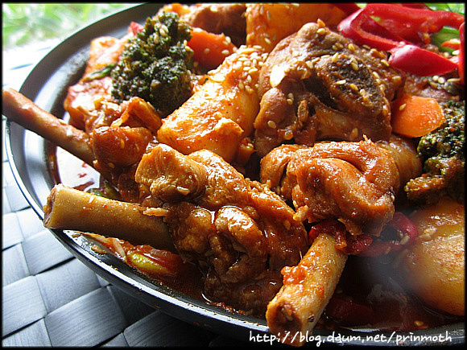

황금비율 닭볶음탕
레시피 동영상
유사한 동영상 더보기
조리방법
- 닭을 한입 크기로 자른 후 우유나 청주, 물(+ 식초) 등에 담가 핏기를 빼고 비린내를 없앤다.
- 대파와 생강을 넣은 물에 손질된 닭을 넣고 끓여 반쯤 익힌다. 감자는 물로 한번 씻어 전분을 빼고 당근과 함께 한입 크기로 썬다.[14] 양파도 큼직하게 썰고 고추는 어슷썬다.
- 소금과 후춧가루를 제외한 양념장을 한데 섞은 후 반쯤 익힌 닭고기를 넣어 재워둔다.
- 양념이 배면 닭과 야채를 넣고 볶다가 육수(아까 닭 삶은 물)를 붓고 졸이다 소금과 후춧가루로 간을 한다.